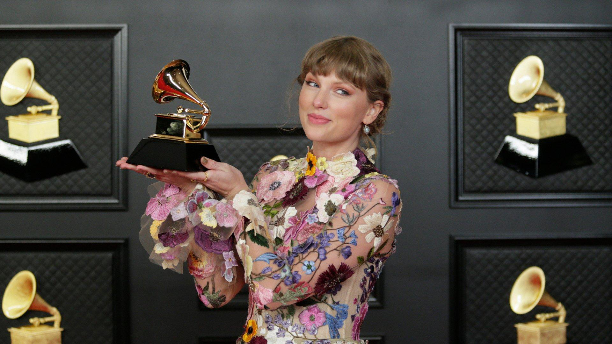
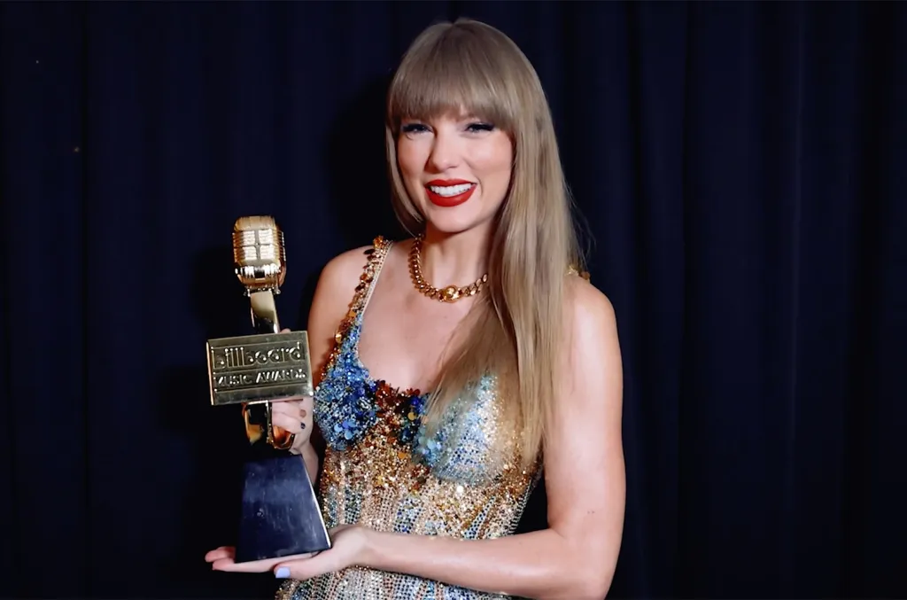
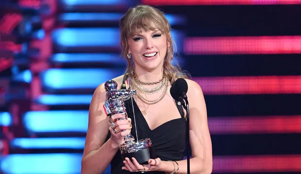
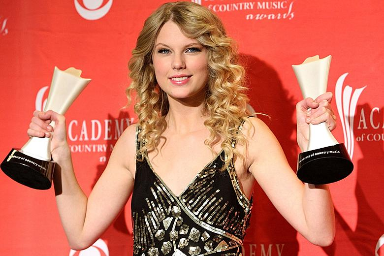
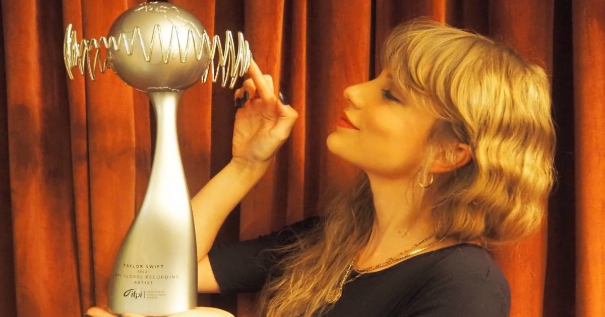

A wiki-style overview of her personal life and career as a singer-songwriter.
Taylor Alison Swift, born on December 13, 1989, in West Reading, Pennsylvania (United States), has become one of the most influential singer-songwriters of the twenty-first century. Known for her autobiographical writing, her ability to reinvent herself across genres, and her unprecedented commercial success, she stands today as the highest-grossing live performer and one of the best-selling artists in history. Her work has shaped contemporary pop culture, and her impact extends far beyond music.
Taylor grew up in a family that recognized her creative instincts early on. Raised in Pennsylvania, she developed a fascination for storytelling and music as a child, eventually teaching herself guitar and writing her own songs. Her ambition led her to Nashville at just fourteen years old, a bold move that placed her at the heart of the country music industry. This early relocation set the foundation for a career defined by determination, discipline, and a rare instinct for narrative songwriting.
Taylor’s professional journey began when she signed with Big Machine Records and released her self-titled debut album in 2006. The record introduced her as a prodigious young country artist with a gift for capturing teenage emotion. Her breakthrough came with Fearless in 2008, an album that transformed her into a global star and produced hits such as “Love Story” and “You Belong With Me.” The project earned her multiple Grammy Awards and established her as a defining voice of her generation.
Over the next decade, she expanded her artistic range with Speak Now and Red, albums that blended country roots with pop ambition. Her full transition to pop arrived with 1989 in 2014, a landmark release that reshaped her public image and dominated global charts. She continued to evolve with Reputation, a darker, more confrontational record, followed by Lover, which embraced a brighter, more romantic aesthetic.
During the pandemic years, Taylor surprised audiences with Folklore and Evermore, two introspective, indie-folk projects that showcased her versatility and earned widespread critical acclaim. She also began re-recording her early catalog to regain ownership of her masters, releasing the now-famous “Taylor’s Version” editions.
Her momentum only intensified in the 2020s. Midnights (2022) broke streaming records, and The Eras Tour (2023–2024) became the highest-grossing tour of all time, redefining the scale and cultural impact of live performance. In 2024, she released The Tortured Poets Department, a lyrically dense and widely discussed album that further cemented her status as a generational storyteller.
By 2025, Taylor remains a dominant cultural force, a billionaire artist whose influence spans music, film, fashion, and global media. In addition to the continued success of The Eras Tour and her recent albums, she has also completed one of the most significant artistic reclamations in modern music history through her re-recordings, which reshaped industry conversations about artists’ rights and creative ownership.
Taylor’s career is often described through distinct “eras”, each marked by a shift in sound, aesthetics, and narrative focus. Her early years were defined by country storytelling and youthful sincerity. The Fearless and Speak Now periods elevated her into a fairytale-like figure of American pop-country. With Red, she embraced emotional complexity and sonic experimentation, paving the way for the polished pop reinvention of 1989.
The Reputation era introduced a darker, more defiant persona, while Lover brought a pastel-colored return to optimism. The unexpected folk turn of Folklore and Evermore revealed a quieter, literary side of her artistry. Midnights reintroduced a sleek, nocturnal pop sound, and The Tortured Poets Department explored themes of identity, heartbreak, and creative mythology. Across all these eras, Swift has demonstrated an unmatched ability to evolve while maintaining a deeply personal connection with her audience.
Taylor Swift is one of the most awarded artists in music history. Across her career, she has accumulated hundreds of awards, but several stand out as especially historic or record-breaking.
| Award | Nominations | Wins | Notable records / notes | Picture |
|---|---|---|---|---|
| Grammy Awards | 46 | 12 | Holds the record for most Album of the Year wins (4) |  |
| American Music Awards (AMAs) | 54 | 40 | Most awarded artist in AMA history | |
| Billboard Music Awards (BBMAs) | 90 | 49 | Most awarded artist in BBMA history |  |
| MTV Video Music Awards (VMAs) | — | 30 | Holds the record for most Video of the Year wins (5) |  |
| iHeartRadio Music Awards | — | 34 | Most awarded artist in the show’s history | |
| Brit Awards | 13 | 2 | First female artist to win the Global Icon Award | |
| Academy of Country Music Awards (ACM) | — | 8 | Includes wins for Entertainer of the Year |  |
| IFPI Global Recording Artist of the Year | — | 5 | Most wins of any artist |  |
| Time Magazine Honors | — | — | Only woman to be Person of the Year twice (2017, 2023) |  |